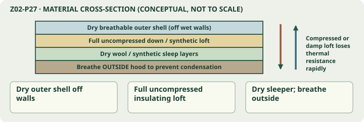

Z02-P27 · Shelter and housing · Adapted historical material
Protect sleeping bags from loft compression and foot-box moisture
Preserve trapped dead-air insulation inside synthetic or down sleeping systems throughout wet or multi-night trips.
When it applies · Overnight backcountry camping and cold-weather emergency delays using sleeping bags or quilts.
Equipment · Waterproof pack liner or dry compression sack, dry dedicated sleep base layers and insulated sleeping pad.

Actions
- Pack sleeping bags inside a sealed waterproof liner during travel so rain, river splashes or leaking water bottles cannot reach the insulation.[E10, E20, W06]
- Change into dry sleep-only base layers and dry socks before entering the bag, and avoid tucking your nose and mouth inside the bag—exhaled breath condenses inside the loft overnight.[E10, E05, ED]
- Keep the foot box and outer shell clear of damp tent walls and give sleeping bags time to loft fully after unpacking; compressed down or wet fibers lose thermal resistance rapidly.[E05, E10, E20]
Failure recognition · Breathing inside a cinched sleeping bag hood all night or stuffing a damp jacket into the foot box, saturating down insulation by morning.[E10, E05]
Verify · Confirm the bag stays inside dry storage during transit, lofts evenly at camp and remains clear of damp tent fabric and exhaled moisture.[E10, E20, ED]
Stop or change course · If down or primary insulation becomes saturated in cold weather and cannot be safely replaced with dry layers, abort overnight exposure and move to warm refuge or request help.[E06, E10, T03]
Evidence and editorial notes
- E05 · NWS · What To Do If You're Caught in a Winter Storm (current web edition)
- Section: Outside and find shelter · Conditions: Cold, wet or windy winter conditions
Support: Block wind, stay dry and keep off cold ground. Keep exposure reduction separate from making a fire.
Limitations: Improvised windbreaks do not provide rated thermal protection or snow-load capacity. · Conflicting evidence: None; aligns with CDC-H.
Editorial note: Separates wind, ground, and moisture heat-loss pathways. · Specialist reviewer: Cold-weather shelter specialist
Primary source · checked 2026-11-24 - E06 · CDC · Preventing Hypothermia (current web edition)
- Section: Recognizing and treating hypothermia · Conditions: Cold wet exposure; signs such as confusion, slurred speech, fumbling or drowsiness
Support: Suspected hypothermia warrants prompt help and protection from further cooling. It can occur above freezing if wet or chilled.
Limitations: Early mild shivering can mask rapidly worsening judgment impairment. · Conflicting evidence: None; aligns with ARC and WMS guidance.
Editorial note: Anchors exposure-to-medical escalation thresholds. · Specialist reviewer: Wilderness medicine
Primary source · checked 2026-11-24 - E10 · NWS · What To Do If You're Caught in a Winter Storm (current web edition)
- Section: Outside > Protect yourself from frostbite and hypothermia · Conditions: Outdoor winter storm
Support: Keep clothing dry and avoid overexertion. Wetness accelerates cooling.
Limitations: Cotton retains moisture and accelerates conductive and evaporative heat loss. · Conflicting evidence: None; reinforces moisture-management layering.
Editorial note: Links sweat management to overnight insulation integrity. · Specialist reviewer: Cold-weather shelter and wilderness medicine
Primary source · checked 2026-11-24 - E20 · NPS · Camping: What to Bring (current web edition)
- Section: Camping: What to Bring > Shelter and Sleep System · Conditions: Overnight camping across three-season and cool conditions
Support: Match tent/tarp, groundsheet, sleeping pad, and sleeping bag ratings to expected night lows and precipitation; test pitching and inspect poles, zippers, and stakes before departure.
Limitations: Manufacturer comfort ratings assume dry insulation, ground pad use, and adequate caloric intake. · Conflicting evidence: None; reinforces pre-trip inspection and dry-sleep separation.
Editorial note: Anchors manufactured shelter selection, groundsheet fit, and gear readiness. · Specialist reviewer: Shelter equipment and field education
Primary source · checked 2026-11-24 - T03 · CDC · Preventing Hypothermia (current web edition)
- Section: Warning signs; What to do · Conditions: Cold exposure and suspected hypothermia
Support: Confusion, slurred speech and drowsiness are warning signs. Obtain medical attention and protect from further cold.
Limitations: Shivering may stop as hypothermia worsens; absence of shivering is not reassurance. · Conflicting evidence: None; aligns with WMS cold guidelines.
Editorial note: Core neurological red-flag trigger for stopping activity and calling rescue. · Specialist reviewer: Wilderness medicine
Primary source · checked 2026-11-24 - W06 · CDC · How to Create an Emergency Water Supply (current web edition)
- Section: How to store emergency water; Safe storage containers · Conditions: Potable water intended for emergency storage
Support: Prefer sealed commercial water or clean food-grade tight-closing containers. Avoid containers that held toxic chemicals.
Limitations: Container shelf durability and rotation depend on plastic/material type and storage heat. · Conflicting evidence: None; reinforces strict raw-vs-clean segregation.
Editorial note: Used to enforce labeling and dedicated raw/potable vessel separation. · Specialist reviewer: Drinking-water safety and public health
Primary source · checked 2026-11-24
Source lineage · B012 P04–P06 and NPS camping gear; new manuscript · Classification · Adapted historical material.